The (Game Dev) Portfolio of Grant Lawrence Williams (@daethtech)
Independent projects/TCY-Games

Click here to visit TCY-Games! (where my more polished projects go)
Tracey and the Magic Brush (WIP)
Original concept, project lead, programming, mechanical design, level design,
character design, texture art, background art, sprite art, and animation
<a href="https://tcygames.itch.io/tracey-and-the-magic-brush"> Tracey and The Magic Brush by TCY-Games</a>
UMich EECS 494 FA 23 Projects
Tracey and the Magic brush: EECS 494 build (Winner of the showcase vote)
<a href="https://daethtech.itch.io/tracey-and-the-magic-brush-494-p3-version">Tracey and the Magic Brush (EECS 494 P3 Version) by TCY-Games</a>
EECS 494 TatMB postmortem (pdf)
TatMB (Concept build after 2 weeks of work)
<a href="https://daethtech.itch.io/tracey-and-the-magic-brush-gold"></a>TatMB (Concept build after 2 weeks of work)
StarSpark (Unity Remaster of NES Metroid with a custom level)
<a href="https://daethtech.itch.io/starspark"></a>EECS 494 P1: StarSpark by daethtech